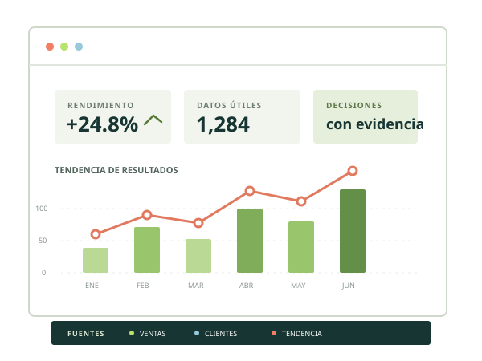

EL CONCEPTO
¿Qué es BI?
Business Intelligence reúne procesos, tecnologías y herramientas que transforman datos en información útil para respaldar decisiones.
01DECISIONES CON EVIDENCIA
Business Intelligence convierte datos dispersos en información que orienta mejores decisiones. Aprende sus fundamentos y ponlos a prueba con ejemplos cercanos.

01 — CONCEPTOS CLAVE
BI conecta tecnología y conocimiento del negocio para que las decisiones no dependan solo de intuiciones.
EL CONCEPTO
Business Intelligence reúne procesos, tecnologías y herramientas que transforman datos en información útil para respaldar decisiones.
01EL PROPÓSITO
EL ECOSISTEMA
Fuentes de datos, integración, almacenamiento, análisis y visualización trabajan en conjunto para llevar la información hasta quienes deciden.
03EL KIT DE TRABAJO
Power BI y Tableau crean informes visuales; Excel facilita el análisis tabular; Looker Studio conecta fuentes y comparte paneles en línea.
MEDIR LO QUE IMPORTA
Un KPI es una medida clave vinculada a un objetivo. Ejemplos: ventas mensuales, satisfacción de clientes o puntos obtenidos por un equipo.
02 — DEL ANÁLISIS A LA ACCIÓN
Una secuencia sencilla ayuda a distinguir hechos, interpretaciones y acciones.
Definir el problema
Reunir datos relevantes
Buscar patrones
Valorar alternativas
Actuar con evidencia
Medir el resultado
CASO DE NEGOCIO
Una tienda revisa sus datos antes de mover inventario.
Las ventas totales cayeron 12% frente al mes anterior. Ejemplo ilustrativo
La caída se concentra en dos productos con quiebres de stock frecuentes.
Ajustar el inventario de esos productos y revisar el efecto en cuatro semanas.
03 — PREPARAR PARA CONFIAR
Antes de visualizar, los datos deben pasar por un flujo de preparación consistente.
EXTRACT
Obtiene información de bases de datos, archivos CSV, hojas de cálculo y otras fuentes.
TRANSFORM
Limpia, organiza, valida y prepara registros para analizarlos de forma consistente.
LOAD
Guarda los datos procesados en un destino listo para informes y dashboards.
PRUÉBALO
Observa cómo los registros originales se convierten en una tabla limpia.
| Producto | Fecha | Unidades | Precio |
|---|---|---|---|
| cuaderno A4 | 2026/04/03 | 2 | 3.50 |
| Lapiz HB | 04-03-26 | -1 | 0.50 |
| Marcador azul | 2026/04/04 | 5 | 1.20 |
04 — APLICACIÓN
El equipo combina ventas, inventario y visitas para entender por qué algunos productos no alcanzan sus objetivos.
Ver BI aplicado al deporteVentas mensuales por debajo del objetivo.
Ventas por producto, inventario y tráfico por día.
Los sábados concentran más visitas, pero faltan unidades de los productos más vendidos.
Reponer antes del fin de semana y probar una ubicación distinta para productos complementarios.
Ventas semanales, disponibilidad de stock y conversión de visitas a compra.
ventas semanales frente al periodo anterior
05 — PON A PRUEBA LO APRENDIDO
Responde 12 preguntas, suma puntos y descubre tu rango BI. Una pregunta a la vez; cada respuesta incluye una explicación.
BI CHALLENGE
Comprueba lo que sabes de BI, KPI, calidad de datos y ETL.